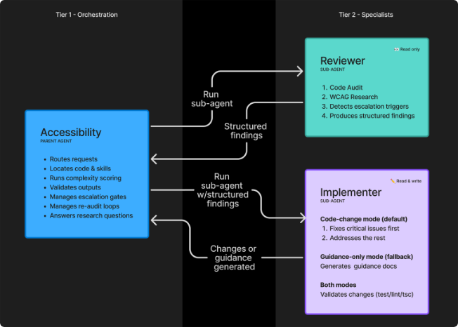
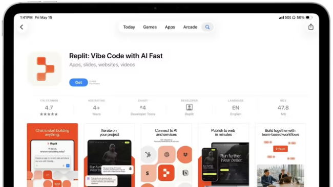

SuuJiKat AI Daily
AI 今天的共同信号：AI 正在从“会生成”进入“能被接管、能被验收、能被基础设施承载”
2026-05-16 · AIGC 今日观察
今天的 5 条新讯分成两条线：海外在继续把 AI 助手推向个人财务、工程验收和移动编程；国内则更像在补“AI 能不能跑起来”的底座，包括光模块、家庭终端和运营商渠道。
AI 的下一阶段，不只是模型更聪明，而是工作流、终端和基础设施一起进入可交付状态。
今日目录
01｜OpenAI：ChatGPT 开测个人理财，AI 开始触碰“高敏感决策”
02｜GitHub：用 Copilot coding agent 做“通用无障碍修复 agent”的一次复盘
03｜Replit：AI 氛围编程应用恢复 App Store 更新，移动端编程入口继续往前走
04｜国产光模块：AI 数据中心链条继续升温，互连正在变成瓶颈
05｜中国移动 × 九联科技：家庭 AI 入口从“屏”走向服务体系
01｜OpenAI：ChatGPT 开测个人理财，AI 开始触碰“高敏感决策”
图：IT之家原文配图。
IT之家 5 月 16 日报道，OpenAI 正在测试 ChatGPT 个人理财能力，包括消费洞察、旅行支出分析、目标规划等方向。
SuuJiKat 判断
个人理财不是普通问答场景，它要求授权、证据、可解释和边界。
AI 助手越靠近钱，越需要从“生成答案”升级为“可审计的决策辅助”：看了哪些数据、建议如何得出、错误如何纠偏，都要能被用户理解。
来源：IT之家
02｜GitHub：用 Copilot coding agent 做“通用无障碍修复 agent”的一次复盘

图：GitHub 官方文章中的 accessibility agent 分层流程图。
GitHub 发布官方文章，复盘他们如何用 Copilot coding agent 尝试构建一个通用无障碍（Accessibility）修复 agent，以及过程中学到的经验与限制。
SuuJiKat 判断
这条线索最重要的不是“Agent 会写代码”，而是 Agent 被拉进了可检查、可回归、可验收的工程标准。
AI 工作流想稳定复用，第一步不是更花哨的提示词，而是先定义“什么叫做完”：规则、测试、Review 清单、证据输出。
💡 Accessibility（无障碍）：让更多用户（包括视障、听障、行动不便等）也能顺畅使用产品的设计与工程规范。它天然需要可检查标准，因此很适合作为 Agent 的硬验收场景。
来源：GitHub
03｜Replit：AI 氛围编程应用恢复 App Store 更新，移动端编程入口继续往前走

图：IT之家原文配图。
IT之家 5 月 16 日报道，AI 氛围编程应用 Replit 时隔 4 个月获得 App Store 更新放行。
SuuJiKat 判断
AI 编程工具正在从“桌面 IDE”继续外溢到手机端和碎片化场景。
这不意味着大家会在手机上写完整工程，而是意味着“想法、修正、审阅、发布前检查”这些环节会更频繁地发生在移动端。
来源：IT之家
04｜国产光模块：AI 数据中心链条继续升温，互连正在变成瓶颈
图：IT之家原文配图。
IT之家 5 月 16 日报道，国产光纤光模块供不应求，部分特种光纤价格一年涨 10 倍。
SuuJiKat 判断
AI 基础设施不是只有 GPU，互连能力也在决定模型能不能规模化使用。
当大模型推理、训练和数据中心互联持续扩张，光模块、特种光纤、交换与互连链条都会变成“看不见但卡脖子”的部分。
💡 光模块：数据中心里把电信号和光信号互相转换的关键器件。AI 集群规模越大，服务器之间传数据越频繁，光模块的重要性就越高。
来源：IT之家
05｜中国移动 × 九联科技：家庭 AI 入口从“屏”走向服务体系
图：新浪原文配图。
新浪 5 月 16 日硬件热点小时报提到，九联科技作为终端合作伙伴参与中国移动灵犀智屏系列产品发布，相关方向包括家庭终端、Token 经济生态与运营商服务入口。
SuuJiKat 判断
国内 AI 的一条重要落地线，不是单独发布模型，而是把 AI 放进家庭终端和运营商渠道。
这类产品的重点不在于“屏幕有多聪明”，而在于它能否成为家庭里的服务入口：看护、内容、缴费、客服、设备控制、家庭知识库。
来源：新浪
今天的一个判断
AI 的竞争正在从模型发布，转向“谁能把 AI 放进可复用的流程和可承载的基础设施”。
海外今天更像在推进工作流：个人理财、代码验收、移动编程。国内今天更像在补落地底座：光模块、家庭终端、运营商入口。两边合起来看，AI 不再只是“更会说”，而是在变成一个需要被部署、被检查、被接管、被长期维护的系统。
来源
1. https://www.ithome.com/0/951/162.htm
2. https://github.blog/ai-and-ml/github-copilot/building-a-general-purpose-accessibility-agent-and-what-we-learned-in-the-process/
3. https://www.ithome.com/0/951/161.htm
4. https://www.ithome.com/0/951/159.htm
5. https://k.sina.com.cn/article_7857201856_1d45362c001905igeg.html